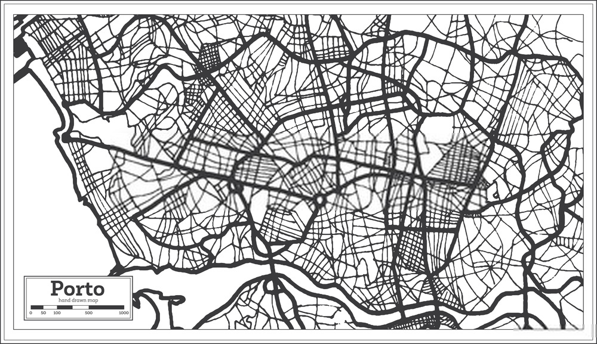

What is BestPath?
Difficulties related to traffic congestion are very common in large cities such as Porto and Lisbon.
A useful approach to solve these issues is to offer all drivers in this city an application that provides information related to the roads congestion. BestPath allows drivers to choose other routes and more efficiently calculate the time of arrival at a destination.
Using GPS coordinates from buses that move in Porto, it's possible to calculate de average velocity. We can then infer whether or not there is traffic.
Features